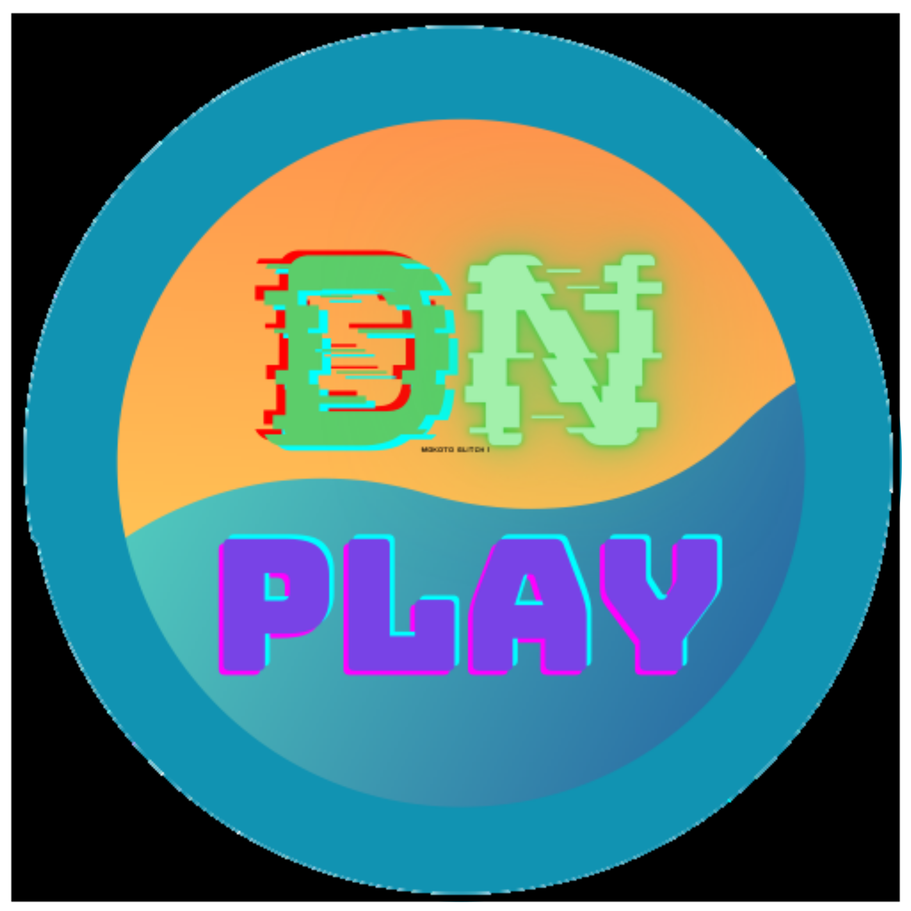

Abyss,
A tabbed proxy with a sleek interface.
Cosmic,
A proxy with smooth css.
Rammerhead,
A fast backend proxy with support for many sites.

Delta,
A WebOS which has apps such as Chromium. It is not a real OS.
Shuttle.
A popular proxy known for it's convenience.
Interstellar,
A proxy with great cloaking functionalities.
Incognito,
A private proxy which has a giant library of apps or games.
IRepel,
A game site which also contains a proxy.
Hypertabs,
A tabbed proxy with tons of unique features.
Nebula,
A proxy made by Nebula Services which has great looks.
Terbium,
A WebOS which has the best functionality.
Elixir,
A clean proxy made with tailwind css.
Utopia,
The first proxy to implement AB cloaking
Fracital,
A proxy with a search bar, this proxy is made for convenience.
General Math,
A game site with vast library of games.
Settings
for Vysterium